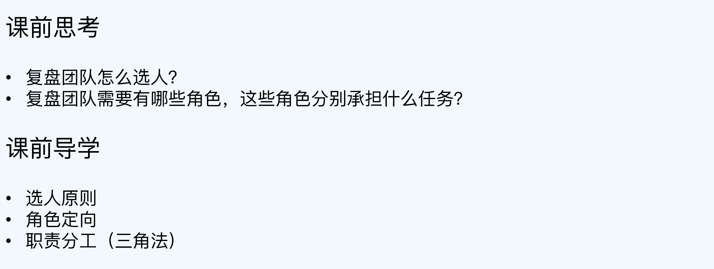
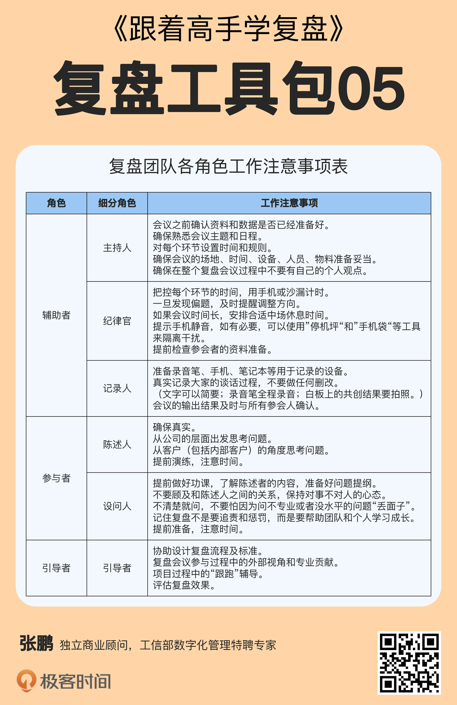

- 00 开篇词 为什么每个人都应该学会复盘？.md.html
- 01 CLAP模型：一个优秀的复盘模型是什么样的？.md.html
- 02 OPTM框架：怎么使用CLAP模型？.md.html
- 03 教练技术：怎么做复盘才能化解冲突？.md.html
- 04 制度和文化：怎么营造复盘环境？.md.html
- 05 三角法：怎么组建复盘团队？.md.html
- 06 MECE原则：怎么准备复盘资料？.md.html
- 07 五步法：如何召开一次高效的复盘会议？.md.html
- 08 事实比较：如何快速比较目标与结果？.md.html
- 09 分析原因：梳理逻辑时怎样找到切入点？.md.html
- 10 洞察规律：怎样更新认知才能找准发力点？.md.html
- 11 OKR：怎样根据复盘结论制定计划？.md.html
- 12 Double Check：怎么检查评估一次复盘的效果？.md.html
- 13 案例导学：我是怎么帮助企业做复盘的？.md.html
- 14 战略升级：5年增长100倍的跨境电商做对了什么？.md.html
- 15 业务关键点：改进一个点业绩增长50%？.md.html
- 16 组织结构设计：变动一个职位，就能带来100万_月的增量吗？.md.html
- 17 高效赋能：怎么建立流程才能把人效提升3倍？.md.html
- 18 人才培养：怎么把人才转化成实际生产力？.md.html
- 19 预算制定：人头和财务预算到底怎么定？.md.html
- 春节荐书（一）《原则》：在不确定中找到确定.md.html
- 春节荐书（二）《人类简史》：故事的力量.md.html
- 结束语 复盘，见天地见众生见自己.md.html
- 捐赠
05 三角法：怎么组建复盘团队？
- 你好，我是张鹏。
上一讲我讲解了怎么在制度和文化层面营造复盘环境，其中很重要的一个举措就是组建复盘团队，并且做好团队成员的角色分工。这一讲，我将为你介绍具体的方法。
发起
复盘团队的组建，需要有一个发起人，通常由团队的一把手兼任。因为复盘能否落地，涉及到设计制度和打造文化，这些都需要绝对的推动力，一把手显然是最好的人选。
通过前面的学习，你明确了复盘需要实现什么样的目标，创造什么样的环境，发起人确定之后，就需要选人了。
选人原则
选人招聘工作中，越是重要又难以培养的品质，优先级越高。所以，绝大部分涉及到选人组队的工作，都可以使用一个基本的排序原则：
意愿度 ＞ 基本素质 ＞ 知识结构 ＞ 专业能力
同样地，复盘团队选人的首要要求也是意愿度，愿意成长、愿意付出、不计较短期利益得失的人优先。
担任复盘团队成员，要做很多本职工作以外的事情，但是一般没有额外的物质奖励，借用乔布斯的话来说，“The journey is the reward（过程即回报）”。
在实际情况中，虽然我们在选人的时候要重视对方自己的意愿度，但是一般来说，优秀的人在公司里往往已经承担了比较多的工作，可能因为担心时间和精力照顾不过来，而对参与复盘不是很积极。
所以我们不但要公开招募，也要结合一定程度的强制摊派。怎么保证因为强制摊派而接到任务的的人，也能有比较高的意愿度呢？这可能就需要发起者做一些思想工作了。
比如，可以告诉他们，复盘的历练可以让他们得到更有深度的思考训练和多角度看待问题的视野，同时复盘也是对未来的储备干部进行培养和选拔的一个重要环节。
另外，如果在确认意愿度的情况下，还需要进一步挑选，可以评估一下参选者的基本素质，比如逻辑思维能力和做事情的靠谱程度。
由于复盘经常涉及到跨部门的业务，因此，知识结构和专业能力并不是最重要的。比如，一个研发部门的同事，完全可以作为复盘团队的成员，协助去做营销部门的复盘工作。这样的历练对培养T型人才非常有帮助。
复盘团队的成员选出来之后，需要明确告诉他们接下来要做什么，这就涉及到角色定向。
角色定向
定向指的是界定工作的内容、范畴、边界和流程等。
我们可以对参加复盘会议的组织者整体进行定向，比如复盘的重点是调整团队的情绪，还是解决具体的问题；也可以对每个关键角色一对一地进行定向，比如不同的角色在会议中主要的职责是什么，该说什么该做什么。
也就是说，每个角色都需要对以下问题得出确定且清晰的答案，同时取得复盘会议全体成员的认同，并与高层对复盘的要求对齐。并且能够保证在复盘会议中保持高度觉知力，不会偏离。
在这里我们需要清晰的对常见的定向问题进行了一个分类：
整体定向的问题包括：
- 我们这次复盘会议的目标是什么？（如：解决哪个关键问题？）
- 我们要创造一个什么样的氛围？（如：安全、开放、包容）
- 确认这次复盘与提升团队认知有什么帮助？（如：务必是紧密相关）
- 确认这次主题的探讨与公司的战略目标有什么关系？（如：务必是因果关系）
- 我们的承诺是什么？（如：我们会引领大家达成怎样的目标？如果没有达成，我们会怎么做？如果达成，我们会怎么做？）
这个部分，主要是让复盘团队全体对复盘的目标有个共识。
一对一定向的问题包括：
针对记录人的问题：
我们需要准备什么？（如：资料收集、数据分析等。）
会议设备是否都准备好了？（录音笔、相机、白板纸笔、笔记本等等）
针对主持人的问题：
我们的流程是什么？（如：第一步做什么，第二步做什么）
会议中有可能会出现什么样的情况？我们如何应对。
针对纪律官的问题：
会议的规则是什么？（如：陈述时间多长？发问时间多长？是轮流来，还是举手随机来？）
如果遇到领导发飙，你怎么处理？
如果一个人说话超时太多，你怎么处理？
（注：记录人、主持人和纪律官三种角色，下面就会详细介绍。）
这个部分，是让各个角色提前做好预案，相当于把流程彩排一遍，这样做能够提升复盘会议的效率。
职责分工：三角法
在数学上，三角形是最稳定的形状。而组建复盘团队的时候，我们也可以用三角法，搭建一个各司其责的三角团队，从而保障复盘会议的产出、效率和氛围。
在三角团队中：
- 一方是辅助者，由复盘团队担当，他们并不负责生产内容，主要负责会议氛围、流程规范和效率；
- 一方是参与者，由项目或者业务团队担当，他们主要负责内容的贡献和复盘结论的共创；
- 还有一方是引导者，一般由外部复盘专家担当，主要负责站在中立的立场上，引导参与者从现象到本质的探讨和逻辑推演过程。
下面我对每一种角色的工作职责逐一说明。
辅助者
复盘会议的辅助者包括主持人，纪律官和记录人，这些人员基本上都是固定的，一般由复盘团队产生（也就是刚才一对一角色定向的人）。辅助者是确保复盘会议能够正常按流程筹备、召开和迭代下一次任务的团队。下面我把辅助者的三种角色的主要工作职责和实际会议场景下的话术范式给你做个讲解。
- 主持人
当有人开始长篇大论的时候，大家可能会在某个细节讨论过多，拖慢了整体的节奏（特别是领导，一般人不敢轻易打断），导致复盘会议特别冗长低效。
所以，复盘团队需要有主持人来推进流程，把握主线，比如可以说：
- “提醒一下，我们现在主要是讨论XX。”
- “请XX发言。”
- “还有谁有不同的看法吗？没有的话这一部分就过了。”
- 纪律官
在复盘会议中，当领导发现某个负责人的工作结果很不好，很可能忍不住就开始劈啦啪啦一顿“怼”，这一方面会耽误时间，另一方面也可能把复盘优化变成“对人不对事”的训斥甚至情绪发泄。
另外，还有很多人参加复盘会议的时候会出现迟到、资料准备不合格、一会儿出去接个电话等情况，也会影响会议的效果。
所以，复盘团队需要有纪律官来提醒监督，维护秩序，比如可以说：
- “XX，记得提前准备好资料。”
- “XX，请注意把焦点转移到对事情的讨论上来。”
- 记录人
你可能遇到过这种情况，明明复盘的时候讨论得热火朝天，也得到了有价值的结论，制定了相关的计划，但是在会后总结和执行的时候，大家却发现很多信息记不清楚，或者不同的人说法不一样，各执一词。
所以，复盘团队需要有记录人来记录总结，及时同步。
参与者
参与者作为内容输出最主要的贡献者，由项目或者业务团队成员担当，根据每个环节的设置情况，可以分为陈述人和设问人。
- 陈述人
陈述人的职责是整理资料，陈述事实，通常是复盘的主要对象（团队小伙伴）。比如对产品运营策略的复盘，陈述人就是产品和运营部门的代表，部门其他成员一般也会来参与，方便随时补充，毕竟只有他们自己才最了解事情本身的信息。
- 设问人
如果介绍情况的时候只有陈述人，很容易出现“自嗨”的情况。因为陈述人虽然对信息比较熟悉，了解比较全面，但是分析不一定透彻。
陈述人口沫横飞地讲了半天，如果没有人给出不同角度或不同深度的反馈，最后可能还是会陷在以前的思维误区里，这样得出的结论和计划，效果可想而知。
所以，复盘团队还需要设问人来提出问题，协助深挖，一般是陈述人的上下游部门成员来承担。
在复盘会议中，陈述人和设问人可能会经常交换角色。比如A做产品，B做市场，A陈述产品的内容时，B就可以从市场的角度对A进行提问，反过来B陈述市场的内容时，A也可以从产品的角度对B进行提问。
就算A和B都是做产品的，比如负责不同的模块，也可以同样的形式推进会议——一个说，一个问。这样会提供多样性的观察视角，有利于提升团队看问题的全面性。
引导者
团队长期在一起工作，思想往往会越来越趋于同化。这时候特别需要一个引导者来观察控场，激活思路，比如可以说：
- “接下来，XX提一下你对这个问题的看法。”
- “这个事情还有没有别的做法？”
- “如果这样XX做，你看看结果会不会不一样？”
如果没有这个角色，一方面容易导致“集体自嗨”，另一方面很难实现真正的创新，因为大家都全部PDCA去了。
所以引导者一般不能是项目内部人员，而是专门请外部的咨询顾问或者跨项目组的同事来担任，这个角色必须有很强的控场能力和业务理解能力，但是又不在项目中，立场保持相对中立。
我把每个角色的复盘工作注意事项整理在了这个表格里。

你可能会有疑问，我们团队一共也没几个人，每个角色分配一个人都不够。大家在这里不要被这些角色给吓住了，一个人可以扮演若干个角色，最极致的情况是，整个团队只有一个人，那也没关系，一个人就是一支团队，你干好所有的活儿就行。
这种角色划分和职责要求几乎已经涵盖了大型业务复盘的方方面面。如果只是小问题或者项目级复盘，你需要心里有根弦儿，在所有任务中选择复盘的任务和对应的角色就行了。
我总结了一张表，可以作为复盘团队做角色分工时的参考，你也可以根据你自己团队的实际情况进行调整。
小结
在这一讲中，我为你讲述了复盘团队如何组建以及在复盘之前的角色定向。现在，我们回顾一下重点内容。
- 复盘团队的发起人一般是团队一把手，选人的时候遵守：意愿度优先，重点考察团队成员的逻辑分析能力和做事靠谱程度；
- 在会议之前需要做好复盘团队的角色定向，团队整体负责会议的目的、进度和氛围，主持人、纪律官和记录人各司其职；
- 在复盘会议中，用三角法对所有与会者进行分工，分别是：负责流程的辅助者，负责内容生产的参与者和负责逻辑推演和控场的引导者。
思考题
这就是今天的全部内容，最后留一道思考题给你吧。
如果针对你所在团队的业务战略或你参与的某个项目的问题来做复盘，你觉得对应三角法中的三类角色（六种细分角色），分别应该选哪些人呢（不用写具体姓名）？
欢迎你把答案写到留言区，和我一起讨论。
© 2019 - 2023 Liangliang Lee. Powered by gin and hexo-theme-book.